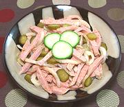

|
WurstsalatGermany, Switzerland - Wurstsalat | ||||
| Makes: Effort: Sched: DoAhead: |
1-1/4 # * 2+ hrs Best |
This is a popular salad in Switzerland and southern Germany. Lyoner is the preferred sausage, though Fleischwurst and Bierwurst are also used. This salad is most often served with fried potatoes and beer. | |||
|
10 5 2-1/2 ------ 2 1 1 2 1/2 1/4 1/2 ------ |
oz oz oz --- T T T T t t t --- |
Lyoner (1) Onion, sweet Gherkins (2) -- Dressing Wine Vinegar, white Gherkin liquid Water Oil (3) Salt Pepper Paprika, sweet (4) ------------- |
This recipe is quite simple, so the quality of the sausage is important. Make - (10 min work + refrigerate)
|